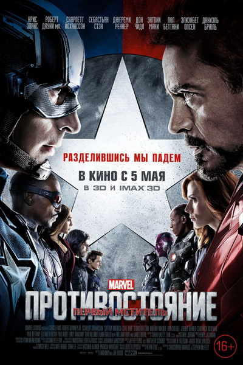
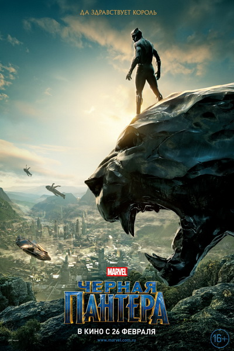
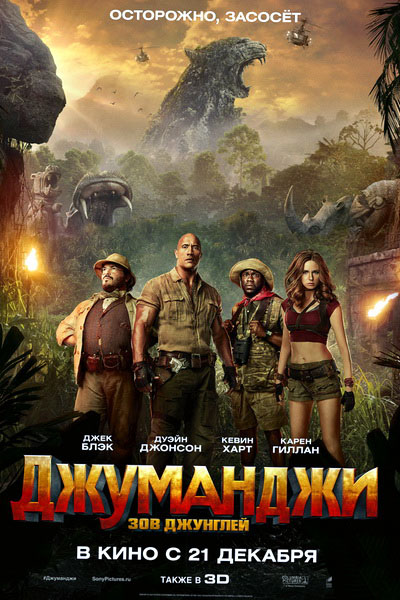

Я целеустремленный, добрый, отзывчивый ну и скромный конечно)
Хочу доказать самому себе, что изменить в корне деятельность это - реально
Первый мститель 3: Противостояние
 Очередной громкий скандал с участием супергероев приводит к неожиданным для всех последствиям: правительство, опасаясь недовольства со стороны граждан, решает полностью взять под контроль деятельность людей со сверхспособностями. Вводится акт о регистрации всех супергероев, согласно которому за всеми ними устанавливается жёсткий контроль. Теперь действия всей команды мстителей, а также других людей с особыми способностями, будут строго контролироваться властями. Тони Старк полностью одобряет такую инициативу, считая, что это абсолютно верный шаг. Стив Роджерс, в свою очередь, категорически против такого ущемления прав, и готов пойти на всё, чтобы отстоять свою позицию.Постепенно ситуация начинает накаляться, а всё значительно ухудшается в тот момент, когда Капитан Америка начинает ещё яростнее помогать своему старому другу, которого теперь преследует правительство, пытаясь его устранить. Он выступает в его защиту и бросает вызов властям, что влечёт за собой неминуемые последствия. В рядах мстителей происходит серьёзный раскол, в результате которого образовывается два противоборствующих лагеря. Одних героев за собой ведёт Капитан Америка, а с другой стороны находится Железный человек со своими соратниками. Это ситуация даёт опасному злодею Барону Зему великолепную возможность воплотить в жизнь свой коварный замысел. Чем же закончится раскол величайшей в истории Земли команды супергероев?
Черная пантера
Территория Африки кажется полностью изученной, но на самом деле в дикой местности затерялось одного необычное государство. Ваканда может показаться обыкновенной африканской страной, на деле же это самая высокотехнологичная нация на планете, которая значительно обогнала по развитию другие государства. Ваканда удивительна тем, что на её территории находятся залежи редчайшего метала на планете, который больше нигде нельзя встретить.  Вибраниум очень ценен благодаря своим уникальным свойствам, и именно из него сделан несокрушимый щит Капитана Америки. Поэтому нет ничего удивительного в том, что периодически появляются люди, желающие раздобыть этот уникальный металл. Его можно продать за очень большие деньги или использовать в своих целях.Существует непобедимый защитник, который должен оберегать народ и земли Ваканды от посягательств извне. Новым хранителем становится принц Т`Чалла, который недавно потерял отца. Он становится новой Чёрной Пантерой, и теперь только он стоит между недоброжелателями, которые хотят разбогатеть и получить власть, и собственными землями. Долгие годы народ Т`Чаллы жил в мире, но появился опасный враг, который готов пойти на всё, чтобы добраться до вибраниума. Чёрной Пантере предстоит вступить в ожесточённую схватку и постараться защитить свои земли.
Четверых старшеклассников оставляются после уроков, чтобы они навели порядок в подсобном помещении. Там герои находят странную видеоигру, о которой они раньше не слышали.  В итоге скромный и неуверенный в себе Спенсер, красотка Беттани, «серая мышь» Марта и сильный спортсмен Фридж каким-то образом оказываются внутри игры. «Джуманджи» буквально засосала героев, и теперь они должны найти способ, как всё исправить и вернуться домой. Пикантности их приключениям добавляет тот факт, что все четверо сильно изменились и стали такими же, как их аватары в игре. Беттани перевоплотилась в пожилого профессора, Фридж стал маленьким и невзрачным, Марта теперь является сильной и очень привлекательной воительницей, а Спенсер превратился в настоящего здоровяка, способного легко расправиться с любым противником. Героям приходится свыкаться со своей новой внешностью, а параллельно с этим пытаться во всём разобраться. Они оказались в диких джунглях, где опасность может подстерегать на каждом шагу. Хищники, большие звери, охотники, бандиты – вот далеко не полный список тех, кто пытается убить школьников. Героям нужно проходить испытания, решать различные головоломки и сражаться со злодеями, ведь это единственная их возможность пройти весь путь и вернуться домой. Но, чтобы пережить всё это, им нужно сплотиться и научиться действовать как одна команда, а в их случае это не так уж и просто.
Дэвид Окойи, будучи приматологом, взял на воспитание гориллу, будущего альфа-самца. Это проводится в порядке генетического эксперимента. СО временем Дэвид отдалился от людей — в компании Джорджа ему комфортнее. Но однажды что-то пошло не так — Джордж превращается в гигантского монстра. Оказывается, у него есть собраться — ужасные существа, сминающие все на пути. Окойи спешит. Он хочет спасти планету от разрушения и... своего друга Джорджа от верной смерти. В фильм Рэмпейдж сюжет частично перекочевал из известной компьютерной игры. На то чтобы его адаптировать к просмотру плодотворно поработала команда сценаристов, среди которых такие имена, как Карлтон Кьюз, Райан Ингл, Райан Кондал. Картина наполнена соответствующими жанру спецэффектами. События на экране развиваются на фоне музыки композитора Эндрю Локингтона, мастерски создающим саундтреки к фантастическим лентам. Главную роль исполняет Дуэйн Джонсон. Актер, будучи рестлером, имеет колоритную внешность и регулярно номинируется на получение приза MTV. Это говорит о положительных отзывах зрителей. Картину украсили актрисы — разные по типажу, но несомненно талантливые — Малин Аккерман и Наоми Харрис. Одну из ролей сыграл Джо Манганьелло, приобретающий в последнее время большую популярность.